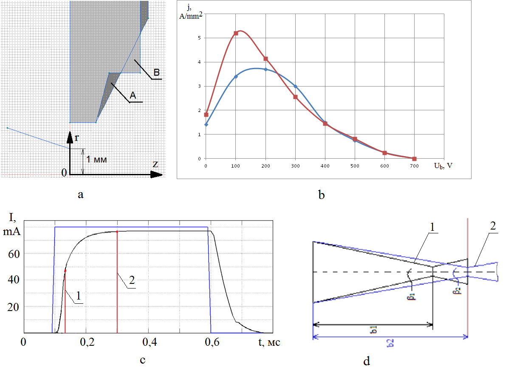

There is a special class of electron beam processing equipment, characterized by beam power densities up to 106-108 watts per square centimeter. These complexes, mainly used for electron beam welding, drilling and cutting of metals and alloys, every day become more relevant in modern engineering. First mass-produced complexes were created by the world industry in 1950-1960, and they had undergone some major changes in 1980-2000, with the improvement of power electronics and microprocessor technology. With the advancement of welding, drilling, etc., the technological needs have been fleshed out, and limitations to meet them have been identified. It is shown that today the electron gun and the power supply to the control system are the main units for improvement, since the other elements of the complex created using standard solutions. In the paper the current problems of electron beam processing equipment and proposed methods of creating electron-optical elements for electron guns and mode settings power sources providing modern overcoming technical constraints are shown. These techniques are combined using computer models to analyze the processes of electron beam formation, transients in power supplies during the regulation, and their inseparable consideration.
Fig. 1 Examples illustrating the use of techniques to improve the technical properties of electron beam equipment; a - the shape and dimensions of a typical bias electrode (A) and improved (B); b - the maximum density of the beam current density versus bias voltage for a typical (A) and improved (B) electrodes; c - the pulse shape of the beam current and the shape of an electron beam (d) relevant to the time points 1 and 2